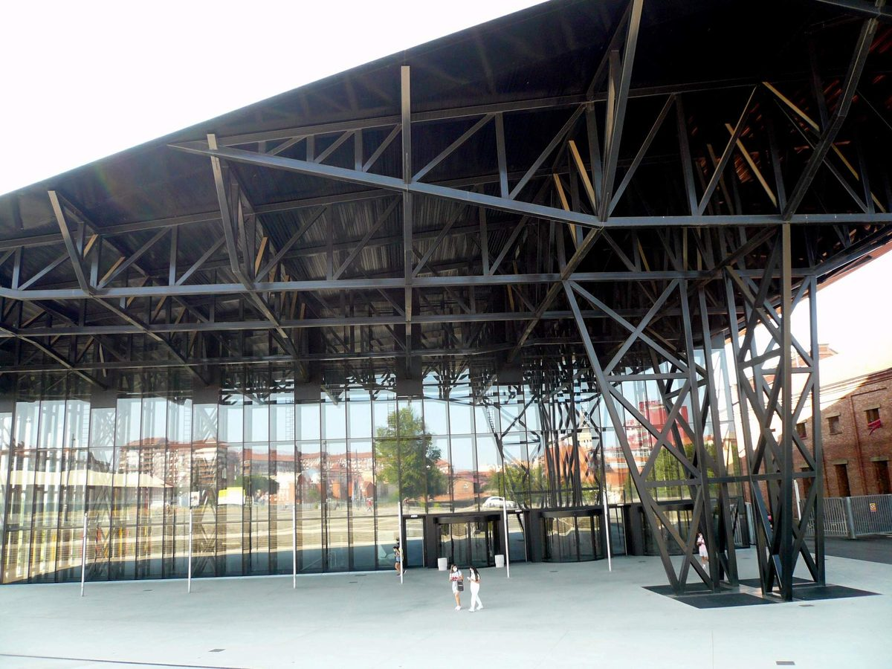

스페인 레온시, 시 건물 13곳 지붕 태양광 2,481장으로 전기 나눠 쓰는 공동 자가소비…유럽 정치혁신상 받아

10곳에 배터리 1,970kWh, 시 계획상 100곳 넘는 시 시설에 공급…사업비 250만 유로 중 100만 유로는 EU 기금, 연 390만kWh 생산 추산…전기 많이 쓰는 시설 수요 85% 충당이 목표
스페인 북서부 카스티야이레온 지방의 레온 시청이 시 공공건물 지붕에서 만든 태양광 전기를 다른 시 시설과 함께 쓰는 공동 자가소비 사업 '레온 스마트 솔라 시티(León Smart Solar City)'로 30일 포르투갈 카스카이스에서 열린 '이노베이션 인 폴리틱스 어워즈 2026(Innovation in Politics Awards 2026)' 시상식에서 상을 받았다. 유러피언 캐피털 오브 디모크라시가 주최하는 이 상은 35개국 300개가 넘는 사업 가운데 결선작을 골랐고, 유럽 시민 1,000명이 넘는 시민 심사단이 평가를 맡았다. 시는 사업 1단계로 체육관·종합체육관·사회복지센터·시민회관 등 시 소유 시설 13곳에 태양광 패널 2,481장을 올렸고, 이 가운데 10곳에는 합계 1,970kWh 규모의 배터리를 달아 낮에 쓰고 남은 전기를 해가 진 뒤 쓸 수 있게 했다. 한 지붕에서 만든 전기는 학교·사무실·체육시설·복지시설 등 다른 시 시설로 배분되며, 시 계획대로라면 100곳이 넘는 시 전력 사용 지점에 공급되고 전기를 가장 많이 쓰는 시설들의 에너지 수요 85%를 채우는 것이 목표다. 시는 사업비를 250만 유로(이 가운데 100만 유로는 유럽연합 기금)로 밝혔고, 연 390만kWh를 생산해 이산화탄소 배출을 해마다 860톤 넘게 줄일 것으로 추산했다. 기존 설비까지 합치면 가동 중이거나 짓고 있는 시 태양광 패널은 5,000장 가까이 되며, 2024년 5월부터 2026년 3월 31일까지 195만8,451kWh를 생산한 회의·전시장 지붕 태양광 1MW도 지금은 전기를 도매시장에 팔고 있지만 시는 이를 공동 자가소비로 돌릴 준비를 하고 있다.
시민에너지 관점
지붕 13곳과 배터리 1,970kWh를 묶어 100곳 넘는 시 시설에 전기를 나누겠다는 레온의 구상은, 공공건물 지붕 하나하나는 작아도 이웃 시설끼리 전기를 주고받게 하면 지역 안의 작은 전력망이 될 수 있다는 점을 보여 준다. 공공건물 지붕은 면적이 작아 사업성이 낮다는 반론이 나올 수 있지만, 레온은 남는 전기를 이웃 시설로 돌리고 배터리로 밤까지 쓰게 해 그 약점을 메웠고, 도매시장에 팔던 회의·전시장 1MW까지 시설 안 소비로 돌리려는 것도 전기를 밖에 파는 것보다 지역 안에서 쓰는 쪽이 값 변동에 덜 흔들린다는 판단으로 보인다. 다만 이 설비는 시 예산과 EU 기금으로 지은 시 소유 설비여서, 같은 방식을 주민 출자와 묶을 때 절감 효과가 시 재정을 넘어 주민의 자산으로 이어진다. 국내에서도 한 지붕의 전기를 이웃 공공시설·주민과 나눠 쓸 수 있도록 공동 자가소비 제도를 열고, 공공건물 지붕부터 주민 출자 몫을 함께 설계해야 한다.
출처: Ahora León 2026-10-31 Saúl 원문 보기
スペイン・レオン市、市の建物13カ所の屋根に太陽光パネル2,481枚、電力を分け合う共同自家消費で欧州の政治イノベーション賞
10カ所に蓄電池計1,970kWh、市の計画では100カ所を超える市施設に供給…事業費250万ユーロのうち100万ユーロはEU基金、年390万kWhの発電を試算…電力消費の多い施設の需要85%を賄うのが目標
スペイン北西部カスティーリャ・イ・レオン州のレオン市役所が、市の公共建物の屋根でつくった太陽光の電気を他の市施設と一緒に使う共同自家消費事業「レオン・スマート・ソーラー・シティ（León Smart Solar City）」で、30日にポルトガル・カスカイスで開かれた「イノベーション・イン・ポリティクス・アワード2026（Innovation in Politics Awards 2026）」の授賞式で賞を受けた。ヨーロピアン・キャピタル・オブ・デモクラシーが主催するこの賞は、35カ国の300件を超える事業から最終候補を選び、1,000人を超える欧州市民の審査団が評価した。市は事業の第1段階として、体育館や総合スポーツ施設、社会福祉センター、市民会館など市有施設13カ所に太陽光パネル2,481枚を設置し、そのうち10カ所には合計1,970kWhの蓄電池を備えて、昼間に余った電気を日没後に使えるようにした。一つの屋根でつくった電気は学校や事務所、スポーツ施設、福祉施設など他の市施設に配分され、市の計画どおりなら100カ所を超える市の電力使用地点に供給され、電力消費の最も多い施設群のエネルギー需要の85%を賄うことが目標だ。市は事業費を250万ユーロ（うち100万ユーロは欧州連合の基金）とし、年390万kWhを発電して二酸化炭素の排出を毎年860トン以上減らせると試算した。既存設備を含めると、稼働中または建設中の市の太陽光パネルは5,000枚近くに上り、2024年5月から2026年3月31日までに195万8,451kWhを発電した会議・展示場の屋根の太陽光1MWも、現在は電気を卸売市場で売っているが、市はこれを共同自家消費に切り替える準備を進めている。
市民エネルギーの視点
13カ所の屋根と1,970kWhの蓄電池を束ねて100カ所を超える市施設に電気を分けるというレオンの構想は、公共建物の屋根は一つひとつが小さくても、近隣の施設同士で電気をやり取りすれば地域の中の小さな電力網になりうることを示している。公共建物の屋根は面積が小さく採算が合わないとの反論もありうるが、レオンは余った電気を近隣施設に回し、蓄電池で夜まで使えるようにしてその弱点を補った。卸売市場で売っていた会議・展示場の1MWまで施設内の消費に回そうとしているのも、外に売るより地域の中で使うほうが価格変動に左右されにくいとの判断とみられる。ただしこの設備は市の予算とEU基金で建てた市有設備であり、同じ方式を住民出資と組み合わせてこそ、節約の効果が市の財政を超えて住民の資産につながる。韓国でも一つの屋根の電気を近隣の公共施設や住民と分け合えるよう共同自家消費の制度を開き、公共建物の屋根から住民出資の枠を合わせて設計すべきだ。
出典: Ahora León 2026-10-31 Saúl 原文を読む
西班牙莱昂市在13处市属建筑屋顶铺设2,481块光伏板，以共享电力的集体自发自用模式获欧洲政治创新奖
10处配置储能电池共1,970kWh，按市政府计划向100多处市属设施供电…项目投资250万欧元，其中100万欧元来自欧盟基金，预计年发电390万kWh…目标是满足用电最多设施85%的能源需求
西班牙西北部卡斯蒂利亚-莱昂自治区的莱昂市政府，凭借把市属公共建筑屋顶所发的太阳能电力与其他市属设施共同使用的集体自发自用项目“莱昂智慧太阳能城市（León Smart Solar City）”，在30日于葡萄牙卡斯凯什举行的“政治创新奖2026（Innovation in Politics Awards 2026）”颁奖典礼上获奖。该奖由“欧洲民主之都”（European Capital of Democracy）主办，从35个国家的300多个项目中选出决赛入围项目，并由1,000多名欧洲公民组成的公民评审团进行评审。市政府在项目第一阶段，在体育馆、综合体育中心、社会福利中心、市民会馆等13处市属设施上安装了2,481块光伏板，其中10处配备了合计1,970kWh的储能电池，使白天用剩的电力可以在日落后使用。一处屋顶所发的电会分配给学校、办公楼、体育设施、福利设施等其他市属设施，按市政府计划将向100多个市属用电点供电，目标是满足用电最多的设施85%的能源需求。市政府表示项目投资为250万欧元（其中100万欧元来自欧盟基金），预计每年发电390万kWh，每年减少二氧化碳排放860吨以上。加上原有设施，市里已投运或在建的光伏板接近5,000块；会议展览中心屋顶1MW光伏在2024年5月至2026年3月31日期间发电195万8,451kWh，目前仍在批发市场售电，市政府正准备将其纳入集体自发自用。
市民能源视角
莱昂把13处屋顶和1,970kWh储能连在一起、向100多处市属设施分电的构想表明，公共建筑屋顶单个虽小，只要让相邻设施互相输送电力，就能成为地区内部的小型电网。有人可能认为公共建筑屋顶面积小、经济性差，但莱昂把富余电力转给邻近设施、用储能把电留到夜间，弥补了这一短板；准备把原本在批发市场出售的会议展览中心1MW也转为自用，看来也是判断在本地使用比向外出售更不易受电价波动影响。不过这些设施是用市财政和欧盟基金建成的市有设施，只有把同样的模式与居民出资结合，节省下来的效益才能超越市财政，转化为居民的资产。韩国也应开放集体自发自用制度，让一处屋顶的电力可以与邻近公共设施和居民共享，并从公共建筑屋顶开始，同步设计居民出资的份额。
来源: Ahora León 2026-10-31 Saúl 查看原文
León, Spain wins European politics innovation award for sharing power from 2,481 solar panels on 13 city building roofs through collective self-consumption
Batteries totalling 1,970kWh at 10 sites, with plans to supply more than 100 municipal facilities; EUR 2.5 million project including EUR 1 million in EU funds expected to generate 3.9 million kWh a year; target is to cover 85% of demand at the highest-consuming facilities
León City Council in Castile and León, northwest Spain, received an award at the Innovation in Politics Awards 2026 ceremony in Cascais, Portugal, on the 30th for León Smart Solar City, a collective self-consumption project in which solar power generated on municipal rooftops is shared with other city facilities. The awards, organised by European Capital of Democracy, chose finalists from more than 300 projects in 35 countries, which were assessed by a citizens' jury of more than 1,000 Europeans. In the project's first phase, the city installed 2,481 solar panels on 13 municipal sites, including sports halls, sports centres, a social services centre and a civic centre, and fitted 10 of them with batteries totalling 1,970kWh so that power left unused during the day can be used after dark. Electricity from one roof is allocated to other municipal facilities such as schools, offices, sports and social services buildings; under the city's plans it will supply more than 100 municipal consumption points, with the goal of covering 85% of the energy needs of the highest-consuming facilities. The city put the investment at EUR 2.5 million, of which EUR 1 million comes from European Union funds, and estimates the system will generate 3.9 million kWh a year and avoid more than 860 tonnes of carbon dioxide annually. Including existing installations, the city has close to 5,000 panels in operation or under construction, and the 1MW rooftop array on the Conference and Exhibition Centre, which produced 1,958,451kWh between May 2024 and 31 March 2026, currently sells into the wholesale market, though the city is preparing to bring it into municipal collective self-consumption.
Citizen Energy View
León's plan to link 13 rooftops and 1,970kWh of batteries to share power with more than 100 municipal facilities shows that public roofs, small on their own, can become a small local grid when neighbouring buildings trade electricity with one another. Some may argue that public roofs are too small to pay off, but León has offset that weakness by sending surplus power to nearby facilities and storing it for use at night, and its move to shift the 1MW exhibition centre array from wholesale sales to on-site use appears to reflect a judgement that power used locally is less exposed to price swings than power sold outside. These installations, however, are city-owned assets built with municipal and EU money, and only when the same model is combined with resident investment do the savings reach beyond the city budget to become residents' own assets. Korea, too, should open the way for collective self-consumption so that one roof's power can be shared with neighbouring public facilities and residents, and design a share for resident investment from the start, beginning with public building roofs.
Source: Ahora León 2026-10-31 Saúl Read the original